회원가입
|
로그인
|
ID/비밀번호 찾기
학원 소개
학원 소개
찾아오시는 길
한식 과정
강사 소개
수업 커리큘럼
중식 과정
강사 소개
수업 커리큘럼
일식 과정
강사 소개
수업 커리큘럼
게 시 판
공지사항
건의사항
소중한 수강평
마이페이지
아이디 찾기
비밀번호 찾기
개인정보 수정
회원탈퇴
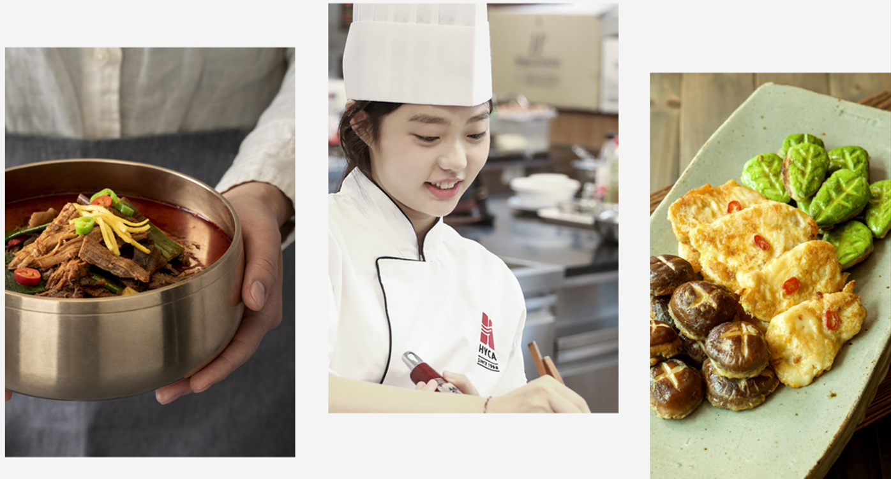
| 강사 소개 |
< 강사 경력 >
2024 YAMYAM ACADEMY 겸임 강사
2024 국제베스트브랜드대상 어워즈 한식개발부문 대상
2022 약선요리기능장(사단법인 대한 약선 요리 전문 최고원)
2022 대한민국 한식포럼 한식명장 선정
2020 월드코리안뉴스 한식문화 편집의원
2018 한국음식문화재단 대한민국 한식 대가 선정
2015 숙명여자대학교 학국음식 연구원 수료
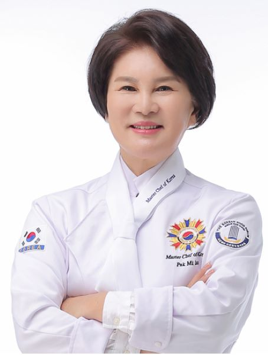
| 한식 조리 자격증 커리큘럼 |
커리큘럼 바로가기
월
화
수
목
금
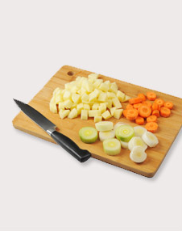
재료썰기, 콩나물밥, 비빔밥
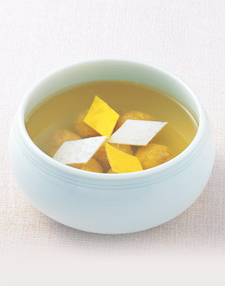
완자탕, 너비아니구이
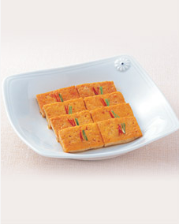
두부조림, 홍합초
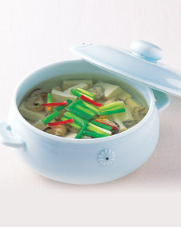
두부젓국찌개, 오징어볶음
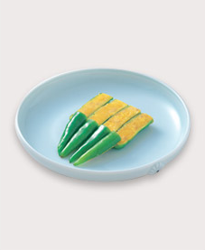
풋고추적
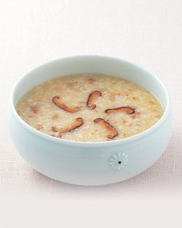
장국죽, 제육구이, 생선찌개
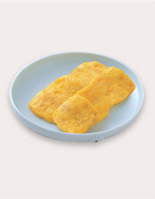
생선전, 육원전, 표고버섯전
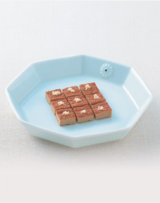
섭산적, 화양적, 지짐누름적
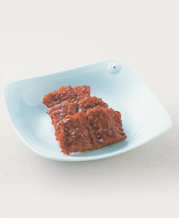
북어구이, 더덕구이
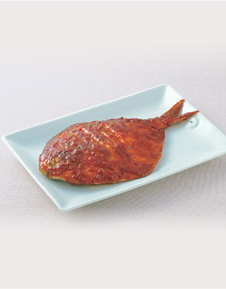
생선양념구이, 무생채
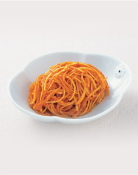
도라이생채, 더덕생채
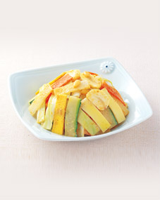
겨자채, 미나리강회
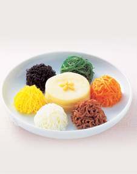
칠전판, 탕평채
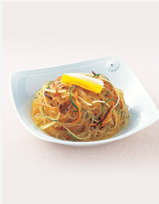
잡채, 육회
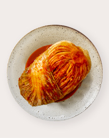
배추김치, 오이소박이